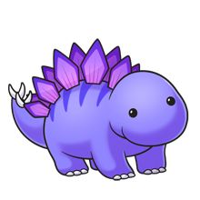

Story!=-_-= New line each day!
Purple dinos are awesome. They eat only candy, that is why they are Purple.
But one Purple dino got tired of all the candy (hard to believe right?)
That Purple dino wanted to eat pizza.
When he ate the pizza he turned yellow with red spots.
When his Purple mom found out the now yellow and red dino got into trouble.
His mom said that Purple dinos only ate candy since the dawn of time. But yellow and red dino
thought that dinosurs should try more food. I mean come on there are so many foods out there,
- Stake
- Alfrado
- Chicken
- Eggs
and so many more! The little dino wanted to try all of them! So the little dino did! He tried all of them, and he loved it! The little dino kept changing colors
with all the food he tried, so it was hard to keep track of what he ate. But no one cared as long as he was Purple again!
And he loved it. The End.

Once Upon A Time there was a princess named Rose. She loved roses (her namesake). They were here favorite flower.